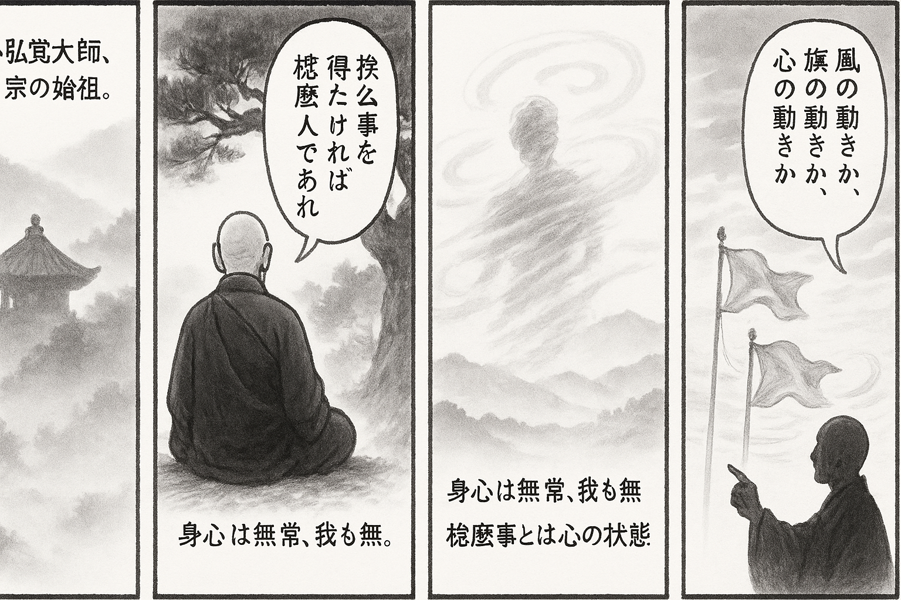

七十五巻 巻一覧
正法眼藏第17 恁麼
本ページは各巻の紹介ページです。tools/gen_web_volumes.py が doc/正法眼蔵.txt から要点の短い抜粋を載せています（全文の引用ではありません）。
出典（原文）: https://shomonji.or.jp/zazen/doc/genzou.html
原文・現代語訳の全文は 全文ページを参照してください。
この巻の紹介（概要）
道元『正法眼蔵』七十五巻の第17篇「恁麼」です。禅籍・経典への引用や語の行間が重なりやすいので、一度ですべてを要約に還元しない読み方を推奨します。問答 Bot では巻スコープにこの題名を含めると応答が安定しやすいことがあります。
語彙の足場
- 題名語：巻題「恁麼」は、道元が本章で特に扱う論点の看板です。辞書義だけに固定せず、原文中の用例で意味を確かめます。
- 引用と典故：公案・経文の引用は、一字一句の照応（何に答えているか）を押さえると全体が見えやすくなります。
- 学び方：抜粋だけでも音読し、分からない箇所は印を付けて後から問うとよいです。
原文（要点の抜粋）
当巻の冒頭付近からの短い抜粋です。長い引用は載せていません。全文は全文ページを参照してください。出典はリポジトリ内 doc/正法眼蔵.txt です。原文の参照元: https://shomonji.or.jp/zazen/doc/genzou.html
雲居山弘覺大師は、洞山の嫡子なり。釋迦牟尼佛より三十九世の法孫なり、洞山宗の嫡祖なり。
一日示衆云、欲得恁麼事、須是恁麼人。既是恁麼人、何愁恁麼事。
いはゆるは、恁麼事をえんとおもふは、すべからくこれ恁麼人なるべし。すでにこれ恁麼人なり、なんぞ恁麼事をうれへん。この宗旨は、直趣無上菩提、しばらくこれを恁麼といふ。この無上菩提のていたらくは、すなはち盡十方界も無上菩提の少許なり。さらに菩提の盡界よりもあまるべし。われらもかの盡十方界のなかにあらゆる調度なり。なにによりてか恁麼あるとしる。いはゆる身心ともに盡界にあらはれて、われにあらざるゆゑにしかありとしるなり。
身すでにわたくしにあらず、いのちは光陰にうつされてしばらくもとどめがたし。紅顔いづくへかさりにし、たづねんとするに蹤跡なし。つらつら觀ずるところに、往事のふたたびあふべからざるおほし。赤心もとどまらず、片片として往來す。たとひまことありといふとも、吾我のほとりにとどこほるものにあらず。恁麼なるに、無端に發心するものあり。この心おこるより、向來もてあそぶところをなげすてて、所未聞をきかんとねがひ、所未證を證せんともとむる、ひとへにわたくしの所爲にあらず。しるべし、恁麼人なるゆゑにしかあるなり。なにをもつてか恁麼人にてありとしる、すなはち恁麼事をえんとおもふによりて恁麼人なりとしるなり。すでに恁麼人の面目あり、いまの恁麼事をうれふべからず。うれふるもこれ恁麼事なるがゆゑに、うれへにあらざるなり。又恁麼事の恁麼あるにも、おどろくべからず。たとひおどろきあやしまるる恁麼ありとも、さらにこれ恁麼なり。おどろくべからずといふ恁麼あるなり。これただ佛量にて量ずべからず、心量にて量ずべからず、法界量にて量ずべからず、盡界量にて量ずべからず。ただまさに既是恁麼人、何愁恁麼事なるべし。このゆゑに、聲色の恁麼は恁麼なるべし、身心の恁麼は恁麼なるべし、諸佛の恁麼は恁麼なるべきなり。たとへば、因地倒者（地に因りて倒るる者）のときを恁麼なりと恁麼會なるに、必因地起（必ず地に因りて起く）の恁麼のとき、因地倒をあやしまざるなり。
古昔よりいひきたり、西天よりいひきたり、天上よりいひきたれる道あり。いはゆる若因地倒、還因地起、離地求起、終無其理（若し地に因りて倒るるは、還た地に因りて起く、地を離れて起きんと求むるは、終に其の理無けん）。
いはゆる道は、地によりてたふるるものはかならず地によりておく、地によらずしておきんことをもとむるは、さらにうべからずとなり。しかあるを擧拈して、大悟をうるはしとし、身心をもぬくる道とせり。このゆゑに、もし、いかなるか諸佛成道の道理なると問著するにも、地にたふるるものの地によりておくるがごとしといふ。これを參究して向來をも透脱すべし、末上をも透脱すべし、正當恁麼時をも透脱すべし。大悟不悟、却迷失迷、被悟礙、被迷礙。ともにこれ地にたふるるものの、地によりておくる道理なり。これ天上天下の道得なり、西天東地の道得なり、古往今來の道得なり、古佛新佛の道得なり。この道得、さらに道未盡あらず、道虧闕あらざるなり。
しかあれども、恁麼會のみにして、さらに不恁麼會なきは、このことばを參究せざるがごとし。たとひ古佛の道得は恁麼つたはれりといふとも、さらに古佛として古佛の道を聞著せんとき、向上の聞著あるべし。いまだ西天に道取せず、天上に道取せずといへども、さらに道著の道理あるなり。いはゆる地によりてたふるるもの、もし地によりておきんことをもとむるには、無量劫をふるに、さらにおくべからず。まさにひとつの活路よりおくることをうるなり。いはゆる地によりてたふるるものは、かならず空によりておき、空によりてたふるるものは、かならず地によりておくるなり。もし恁麼あらざらんは、つひにおくることあるべからず。諸佛諸祖、みなかくのごとくありしなり。
もし人ありて恁麼とはん、空と地と、あひさることいくそばくぞ。
恁麼問著せんに、かれにむかひて恁麼いふべし、空と地と、あひさること十萬八千里なり。若因地倒、必因空起、離空求起、終無其理、若因空倒、必因地起、離地求起、終無其理（地に因りて倒るるがごときは、必ず空に因りて起く。空を離れて起きんと求むるは終に其の理無けん。空に因りて倒るるがごときは、必ず地に因りて起く。地を離れて起きんと求むるは終に其の理無けん）。
もしいまだかくのごとく道取せざらんは、佛道の地空の量、いまだしらざるなり、いまだみざるなり。
第十七代の祖師、僧伽難提尊者、ちなみに伽耶舍多、これ法嗣なり。あるとき、殿にかけてある鈴鐸の、風にふかれてなるをききて、伽耶舍多にとふ、風のなるとやせん、鈴のなるとやせん。
伽耶舍多まうさく、風の鳴にあらず、鈴の鳴にあらず、我心の鳴なり。
図解（4コマ・AI生成）
教義の根拠は原文・出典に従い、漫画は比喩の補助に留めてください。

深掘り（読解のコツ）
- 道元文は定義の羅列に見えても、多くの場合誤解への遮断と正伝の姿勢が背骨になっています。
- 「当体」「現成」「即」などの語が出たら、その巻独自の差別相にどう接続しているかをメモしておくとよいです。